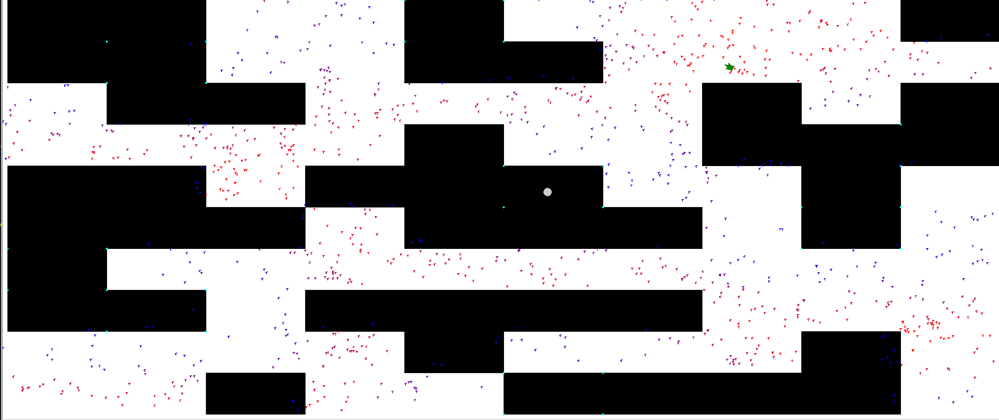
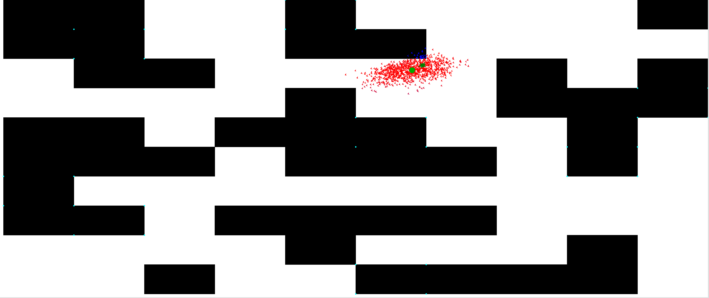

-
本站总访问量次
 1.8.13
1.8.13
Martin J. Laubach在github上展示了一个基于python实现的粒子滤波的案例，个人认为是最好理解的。 抛开drawing代码，总共也就200+行，很容易看懂，代码地址：https://github.com/mjl/particle_filter_demo。
先看一下作者在Readme中给出的解释
对应的运行截图如下：

|

|
下面跟着他的代码一步步理解粒子滤波。
from __future__ import absolute_import
import random
import math
import bisect
from draw import Maze
"""
# Smaller maze
maze_data = ( ( 2, 0, 1, 0, 0 ),
( 0, 0, 0, 0, 1 ),
( 1, 1, 1, 0, 0 ),
( 1, 0, 0, 0, 0 ),
( 0, 0, 2, 0, 1 ))
"""
# 0 - empty square
# 1 - occupied square
# 2 - occupied square with a beacon at each corner, detectable by the robot
maze_data = ( ( 1, 1, 0, 0, 2, 0, 0, 0, 0, 1 ),
( 1, 2, 0, 0, 1, 1, 0, 0, 0, 0 ),
( 0, 1, 1, 0, 0, 0, 0, 1, 0, 1 ),
( 0, 0, 0, 0, 1, 0, 0, 1, 1, 2 ),
( 1, 1, 0, 1, 1, 2, 0, 0, 1, 0 ),
( 1, 1, 1, 0, 1, 1, 1, 0, 2, 0 ),
( 2, 0, 0, 0, 0, 0, 0, 0, 0, 0 ),
( 1, 2, 0, 1, 1, 1, 1, 0, 0, 0 ),
( 0, 0, 0, 0, 1, 0, 0, 0, 1, 0 ),
( 0, 0, 1, 0, 0, 2, 1, 1, 1, 0 ))
PARTICLE_COUNT = 2000 # Total number of particles
ROBOT_HAS_COMPASS = True # Does the robot know where north is? If so, it
# makes orientation a lot easier since it knows which direction it is facing.
# If not -- and that is really fascinating -- the particle filter can work
# out its heading too, it just takes more particles and more time. Try this
# with 3000+ particles, it obviously needs lots more hypotheses as a particle
# now has to correctly match not only the position but also the heading.
# ------------------------------------------------------------------------
# Some utility functions
def add_noise(level, *coords):
return [x + random.uniform(-level, level) for x in coords]
def add_little_noise(*coords):
return add_noise(0.02, *coords)
def add_some_noise(*coords):
return add_noise(0.1, *coords)
# This is just a gaussian kernel I pulled out of my hat, to transform
# values near to robbie's measurement => 1, further away => 0
sigma2 = 0.9 ** 2
def w_gauss(a, b):
error = a - b
g = math.e ** -(error ** 2 / (2 * sigma2))
return g
# ------------------------------------------------------------------------
def compute_mean_point(particles):
"""
Compute the mean for all particles that have a reasonably good weight.
This is not part of the particle filter algorithm but rather an
addition to show the "best belief" for current position.
"""
m_x, m_y, m_count = 0, 0, 0
for p in particles:
m_count += p.w
m_x += p.x * p.w
m_y += p.y * p.w
if m_count == 0:
return -1, -1, False
m_x /= m_count
m_y /= m_count
# Now compute how good that mean is -- check how many particles
# actually are in the immediate vicinity
m_count = 0
for p in particles:
if world.distance(p.x, p.y, m_x, m_y) < 1:
m_count += 1
return m_x, m_y, m_count > PARTICLE_COUNT * 0.95
# ------------------------------------------------------------------------
class WeightedDistribution(object):
def __init__(self, state):
accum = 0.0
self.state = [p for p in state if p.w > 0]
self.distribution = []
for x in self.state:
accum += x.w
self.distribution.append(accum)
def pick(self):
try:
return self.state[bisect.bisect_left(self.distribution, random.uniform(0, 1))]
except IndexError:
# Happens when all particles are improbable w=0
return None
# ------------------------------------------------------------------------
class Particle(object):
def __init__(self, x, y, heading=None, w=1, noisy=False):
if heading is None:
heading = random.uniform(0, 360)
if noisy:
x, y, heading = add_some_noise(x, y, heading)
self.x = x
self.y = y
self.h = heading
self.w = w
def __repr__(self):
return "(%f, %f, w=%f)" % (self.x, self.y, self.w)
@property
def xy(self):
return self.x, self.y
@property
def xyh(self):
return self.x, self.y, self.h
@classmethod
def create_random(cls, count, maze):
return [cls(*maze.random_free_place()) for _ in range(0, count)]
def read_sensor(self, maze):
"""
Find distance to nearest beacon.
"""
return maze.distance_to_nearest_beacon(*self.xy)
def advance_by(self, speed, checker=None, noisy=False):
h = self.h
if noisy:
speed, h = add_little_noise(speed, h)
h += random.uniform(-3, 3) # needs more noise to disperse better
r = math.radians(h)
dx = math.sin(r) * speed
dy = math.cos(r) * speed
if checker is None or checker(self, dx, dy):
self.move_by(dx, dy)
return True
return False
def move_by(self, x, y):
self.x += x
self.y += y
# ------------------------------------------------------------------------
class Robot(Particle):
speed = 0.2
def __init__(self, maze):
super(Robot, self).__init__(*maze.random_free_place(), heading=90)
self.chose_random_direction()
self.step_count = 0
def chose_random_direction(self):
heading = random.uniform(0, 360)
self.h = heading
def read_sensor(self, maze):
"""
Poor robot, it's sensors are noisy and pretty strange,
it only can measure the distance to the nearest beacon(!)
and is not very accurate at that too!
"""
return add_little_noise(super(Robot, self).read_sensor(maze))[0]
def move(self, maze):
"""
Move the robot. Note that the movement is stochastic too.
"""
while True:
self.step_count += 1
if self.advance_by(self.speed, noisy=True,
checker=lambda r, dx, dy: maze.is_free(r.x+dx, r.y+dy)):
break
# Bumped into something or too long in same direction,
# chose random new direction
self.chose_random_direction()
# ------------------------------------------------------------------------
world = Maze(maze_data)
world.draw()
# initial distribution assigns each particle an equal probability
particles = Particle.create_random(PARTICLE_COUNT, world)
robbie = Robot(world)
while True:
# Read robbie's sensor
r_d = robbie.read_sensor(world)
# Update particle weight according to how good every particle matches
# robbie's sensor reading
for p in particles:
if world.is_free(*p.xy):
p_d = p.read_sensor(world)
p.w = w_gauss(r_d, p_d)
else:
p.w = 0
# ---------- Try to find current best estimate for display ----------
m_x, m_y, m_confident = compute_mean_point(particles)
# ---------- Show current state ----------
world.show_particles(particles)
world.show_mean(m_x, m_y, m_confident)
world.show_robot(robbie)
# ---------- Shuffle particles ----------
new_particles = []
# Normalise weights
nu = sum(p.w for p in particles)
if nu:
for p in particles:
p.w = p.w / nu
# create a weighted distribution, for fast picking
dist = WeightedDistribution(particles)
for _ in particles:
p = dist.pick()
if p is None: # No pick b/c all totally improbable
new_particle = Particle.create_random(1, world)[0]
else:
new_particle = Particle(p.x, p.y,
heading=robbie.h if ROBOT_HAS_COMPASS else p.h,
noisy=True)
new_particles.append(new_particle)
particles = new_particles
# ---------- Move things ----------
old_heading = robbie.h
robbie.move(world)
d_h = robbie.h - old_heading
# Move particles according to my belief of movement (this may
# be different than the real movement, but it's all I got)
for p in particles:
p.h += d_h # in case robot changed heading, swirl particle heading too
p.advance_by(robbie.speed)